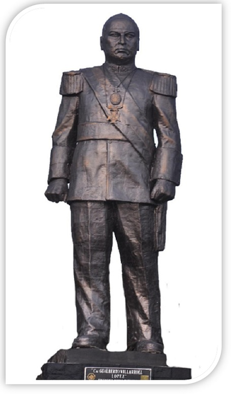
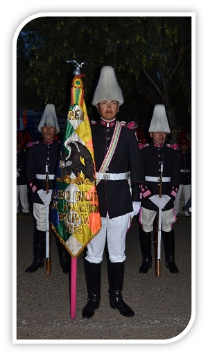

La Historia 
El Colegio Militar, fue fundado mediante Decreto Supremo del Libertador Simón Bolívar el 13 de Diciembre de 1.825. Su diseño fue concebido por el Mariscal Antonio José de Sucre con marcada influencia de la Escuela Politécnica de París, esto le permitió otorgarle un perfil académico comparable a la existente en esa época.
A raíz de la inestabilidad política en el país, nuestro primer instituto de formación funcionó de manera discontinua en sus actividades:
El 22 de abril de 1.842, el Mariscal José Ballivián, ordena el traslado del Colegio Militar a la ciudad de La Paz; posteriormente dispone su traslado a la Hacienda de Mecapaca, en las cercanías de esta ciudad.
El año 1.859 se estableció en el pueblo de Sapahaqui una Academia Militar acorde con las necesidades de defensa de la Nación.
Luego de prolongadas clausuras y fugaces reaperturas académicas, el 18 de abril de 1.891, durante el gobierno de Aniceto Arce, se produce su reapertura definitiva bajo la dirección del Gral. Brig. Pedro Villamil, con 7 Oficiales y 27 Cadetes.
En el periodo 1.932-1935, durante la Guerra del Chaco, destacó el heroísmo del soldado boliviano, pero también resaltó la estirpe patriótica de los Cadetes del Colegio Militar. Los dos cursos superiores, el 5to. y 4to. año fueron movilizados a principios de 1933.
El 6 de octubre del mismo año, se produjo un gesto invalorable que hoy constituye una de las gestas más generosas de patriotismo; el Batallón de adolescentes y jóvenes Cadetes del 1ro. 2do. y 3er. año militar, respondió al llamado de su Comandante de Batallón, dando “TRES PASOS AL FRENTE” al unísono, para dirigirse al frente de batalla y defender la soberanía e integridad de la Patria. La mayoría de ellos nunca más volvió.
Durante la Presidencia del Tcnl. Germán Busch Becerra en el año 1.939 y viendo la necesidad de contar con una nueva instalación, se elige la zona de Irpavi; donde se coloca la piedra fundamental y posteriormente, el 18 de abril de 1.941, se inaugura el nuevo edificio donde actualmente funciona el Colegio Militar.
Por Decreto Supremo No. 03458 de Julio de 1.953, el Primer Instituto de Formación Militar ostenta la denominación de "CNL. GUALBERTO VILLARROEL", como justo reconocimiento y homenaje a un insigne militar patriota que vislumbró mejores días para la Nación.
Mision/Vision 
El Himno
Es deber del que aspira a la espada
Sostener el Honor Nacional
Custodiar la bandera sagrada
Y ensalzarla en su avance triunfal
Caballería, Artillería, Infantería
Son las tres armas que han de dar
Severas normas de hidalguía
En el Colegio Militar
De los héroes nativos tenemos
Un camino de luz a seguir
Realizar los ideales supremos
Al confiar nuestra fe al porvenir
Esa encendida trayectoria
Consagrara nuestro plantel
Será la excelsa ejecutora
Para el castillo y el laurel,
Para el castillo y el laurel.